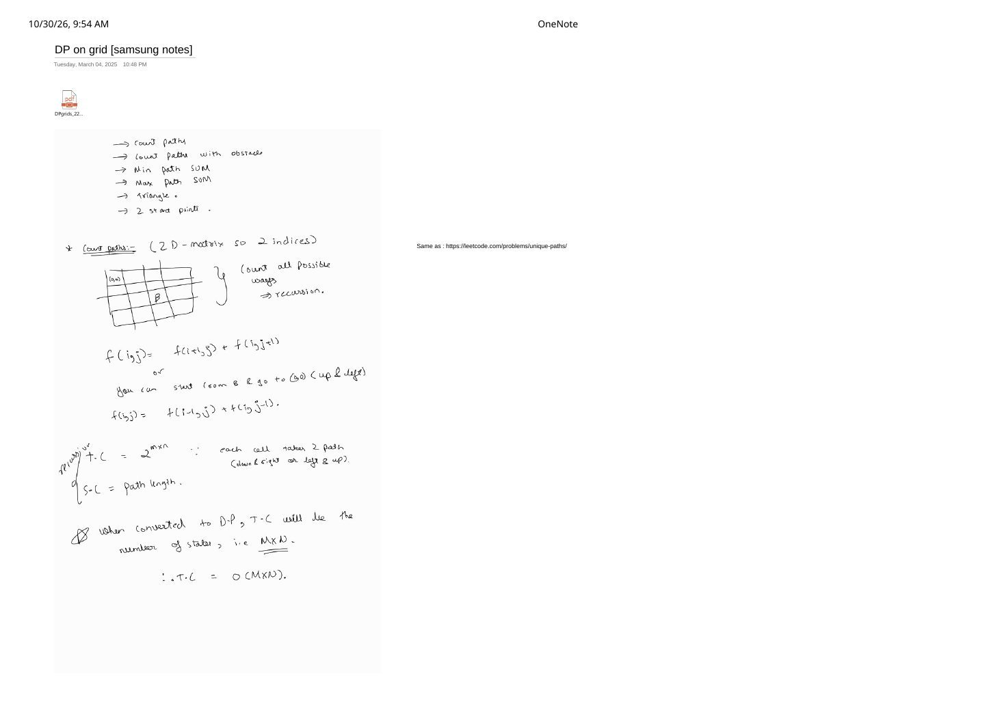
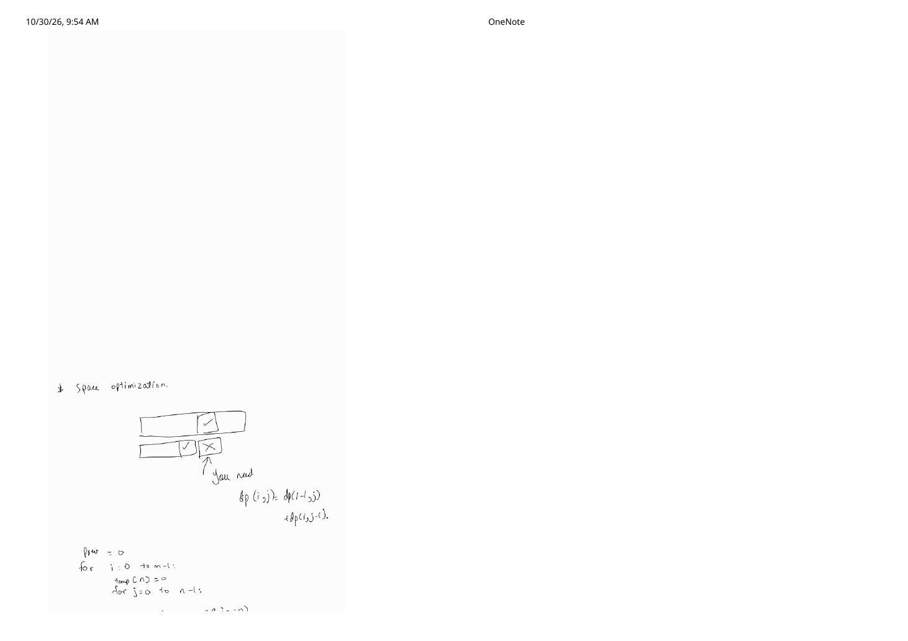
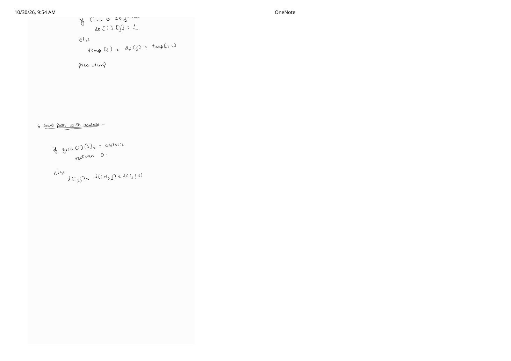
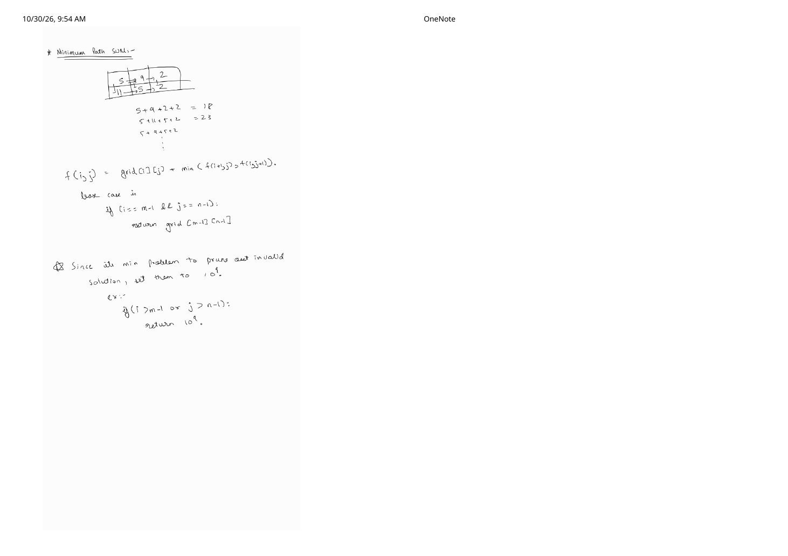
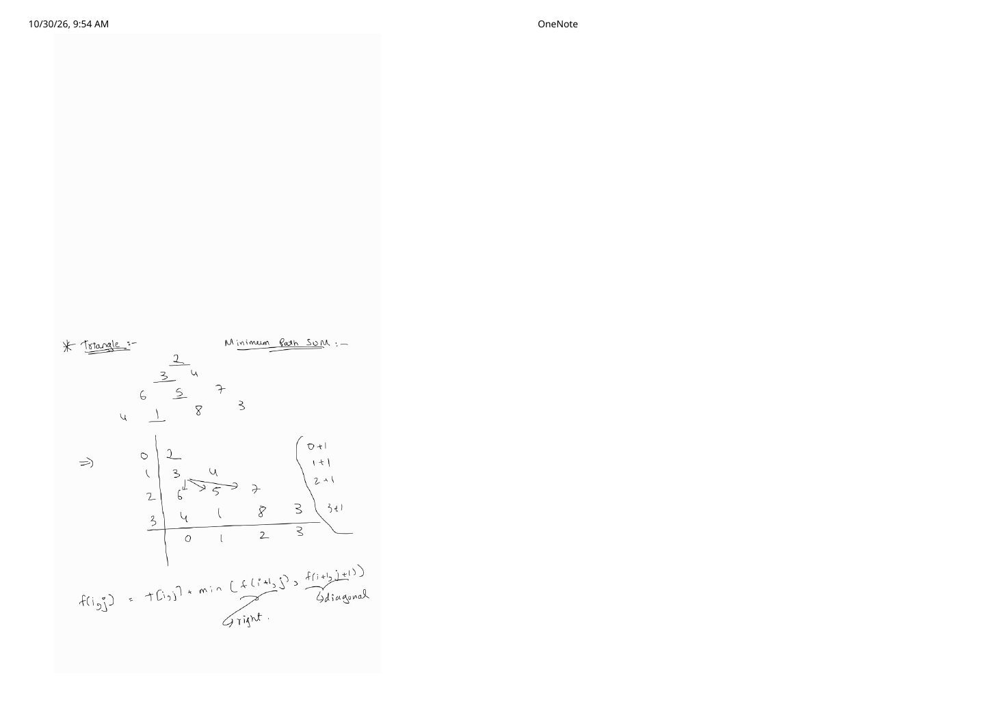

Grid DP & Maximal Rectangle Area in a Binary Matrix
Expanded from handwritten competitive coding study notes (04_DP_on_grid_samsung_notes.pdf, 05_DP_55_Maximal_rectangle_Area.pdf)
On a 2D matrix of $m$ rows and $n$ columns, a single index can no longer identify where we stand—our natural DP state becomes a coordinate pair $(i, j)$. As long as allowed moves advance monotonically (e.g., only right and down), the $m \times n$ grid cells already form a topologically sorted DAG! Better yet, because row $i$ only reads row $i - 1$ and the current row $i$, almost every $O(m \cdot n)$-space grid table compresses into a single $O(n)$ rolling row—culminating in DP-55: Maximal Rectangle Area, where row-accumulated column heights turn a 2D submatrix search into $m$ passes of $O(n)$ monotonic-stack histogram evaluation.
1. The Six-Part Grid DP Roadmap
The Samsung preparation notebook organizes grid DP into six escalating patterns based on boundary conditions and movement rules:
| Pattern | Endpoints | Allowed Steps | State & Optimal Space |
|---|---|---|---|
| 1. Unique Paths (LC 62) | Fixed $(0,0) \to (m-1,n-1)$ | Right, Down | $dp[i][j] \to O(n)$ |
| 2. Maze Obstacles (LC 63) | Fixed $(0,0) \to (m-1,n-1)$ | Right, Down (blocked $= 0$) | $dp[i][j] \to O(n)$ |
| 3. Min / Max Path Sum (LC 64) | Fixed $(0,0) \to (m-1,n-1)$ | Right, Down (OOB $= \pm\infty$) | $dp[i][j] \to O(n)$ |
| 4. Triangle Path Sum (LC 120) | Fixed $(0,0) \to$ any $(n-1, j)$ | Down $(i+1,j)$, Diag $(i+1,j+1)$ | $dp[i][j] \to O(n)$ |
| 5. Two Start Points (LC 1463) | $(0,0) \text{ & } (0,n-1) \to$ row $m-1$ | synchronized row $i$, cols $(j_1, j_2)$ | $dp[i][j_1][j_2] \to O(n^2)$ |
| 6. Maximal 1s Rectangle (LC 85) | Any all-$1$ submatrix $[r_1..r_2, c_1..c_2]$ | Vertical $1$-streaks + Histogram | height[j] + Stack $\to O(n)$ |
2. Unique Paths & Row-Rolling Space Optimization
Count all distinct paths from top-left $(0, 0)$ to bottom-right $(m-1, n-1)$ moving only down $(+1, 0)$ or right $(0, +1)$. Equivalently, walking backward from $(m-1, n-1)$ to $(0, 0)$ moves up $(-1, 0)$ or left $(0, -1)$:
$$f(i, j) = \begin{cases} 1 & \text{if } i = 0 \text{ and } j = 0 \\ 0 & \text{if } i < 0 \text{ or } j < 0 \\ f(i-1, j) + f(i, j-1) & \text{otherwise} \end{cases}$$- Plain Recursion: Every cell branches two ways until hitting a border after $(m-1) + (n-1)$ steps, taking $O(2^{m+n})$ time (loosely bounded by $2^{m \times n}$ in the notes) and $O(m + n)$ recursion stack space.
- Memoization & Tabulation: Caching all $m \times n$ coordinate pairs drops runtime to $\Theta(m \cdot n)$ and table space to $\Theta(m \cdot n)$.
- Row-Rolling Space Optimization ($O(n)$): As drawn in
04_DP_on_grid_samsung_notes.pdfp.2, computing cell $(i, j)$ requires only two neighbors:prev[j]directly above in row $i - 1$, andtemp[j - 1]immediately to the left in current row $i$!
prev[0..n-1] and temp[0..n-1] (or updating prev[j] += prev[j-1] in-place) cuts memory from $O(mn)$ to $O(n)$.Adding Obstacles (Unique Paths II)
When blocked cells (`obstacleGrid[i][j] == 1`) are present, any path stepping onto a blocked cell contributes $0$ ways—including if the start cell $(0, 0)$ itself is blocked:
int uniquePathsWithObstacles(const vector<vector<int>>& grid) {
int m = (int)grid.size(), n = (int)grid[0].size();
vector<long long> prev(n, 0);
for (int i = 0; i < m; ++i) {
vector<long long> temp(n, 0);
for (int j = 0; j < n; ++j) {
if (grid[i][j] == 1) {
temp[j] = 0; // Obstacle kills all paths through (i, j)
} else if (i == 0 && j == 0) {
temp[j] = 1;
} else {
long long up = (i > 0) ? prev[j] : 0;
long long left = (j > 0) ? temp[j - 1] : 0;
temp[j] = up + left;
}
}
prev = move(temp);
}
return (int)prev[n - 1];
}3. Minimum Path Sum & the $+\infty$ Out-of-Bounds Guard
Each cell carries a non-negative cost $\text{grid}[i][j]$, and we want a path from $(0, 0)$ to $(m-1, n-1)$ minimizing the sum of visited cells. Tracing the handwritten $2 \times 3$ example $\begin{bmatrix} 5 & 9 & 2 \\ 11 & 5 & 2 \end{bmatrix}$:
Handwritten Path Enumeration on $\begin{bmatrix} 5 & 9 & 2 \\ 11 & 5 & 2 \end{bmatrix}$
- $\text{Right} \to \text{Right} \to \text{Down}$: $5 + 9 + 2 + 2 = \mathbf{18}$ (minimum!)
- $\text{Right} \to \text{Down} \to \text{Right}$: $5 + 9 + 5 + 2 = 21$
- $\text{Down} \to \text{Right} \to \text{Right}$: $5 + 11 + 5 + 2 = 23$
In forward form, $f(i, j) = \text{grid}[i][j] + \min\bigl(f(i+1, j),\; f(i, j+1)\bigr)$ with destination base case $f(m-1, n-1) = \text{grid}[m-1][n-1]$.
Never Return 0 or INT_MAX on Out-of-Bounds in Min-Cost DP!
- If $f(i, j)$ returns
0when $i \ge m$ or $j \ge n$, then $\min(f(i+1, j), f(i, j+1))$ will greedily jump off the board to get $0$ instead of paying positive cell costs to reach $(m-1, n-1)$! - If $f(i, j)$ returns
INT_MAX, then computinggrid[i][j] + f(...)overflows signed 32-bit `int` into a huge negative number! Use a safe infinity sentinel such asconst int INF = 1e9;(or `1LL << 60` in `long long`).
int minPathSum(const vector<vector<int>>& grid) {
int m = (int)grid.size(), n = (int)grid[0].size();
const int INF = 1e9;
vector<int> prev(n, INF);
for (int i = 0; i < m; ++i) {
vector<int> temp(n, INF);
for (int j = 0; j < n; ++j) {
if (i == 0 && j == 0) {
temp[j] = grid[0][0];
} else {
int up = (i > 0) ? prev[j] : INF;
int left = (j > 0) ? temp[j - 1] : INF;
temp[j] = grid[i][j] + min(up, left);
}
}
prev = move(temp);
}
return prev[n - 1];
}4. Triangle Minimum Path Sum (Variable Destination DP)
Given a triangular array $T$ of $n$ rows where row $i$ contains $i + 1$ integers ($j \in \{0, \dots, i\}$), find the minimum path sum from the apex $(0, 0)$ to any cell on the bottom row $n - 1$. At $(i, j)$, you may move straight down to $(i+1, j)$ or diagonally right to $(i+1, j+1)$.
Handwritten Dry Run (`04_DP_on_grid_samsung_notes.pdf` p.5)
For $T = \bigl[[2],\; [3, 4],\; [6, 5, 7],\; [4, 1, 8, 3]\bigr]$:
$$f(i, j) = T[i][j] + \min\bigl(\underbrace{f(i+1, j)}_{\text{down}},\; \underbrace{f(i+1, j+1)}_{\text{diagonal}}\bigr), \qquad f(n-1, j) = T[n-1][j]$$Rolling upward from row $3$: row $3 = [4, 1, 8, 3] \;\to\;$ row $2 = [6+\min(4,1),\; 5+\min(1,8),\; 7+\min(8,3)] = [7, 6, 10] \;\to\;$ row $1 = [3+\min(7,6),\; 4+\min(6,10)] = [9, 10] \;\to\;$ row $0 = [2+\min(9,10)] = \mathbf{11}$ (path $2 \to 3 \to 5 \to 1$).
Design lesson: Always root recursion at the fixed endpoint $(0, 0)$ rather than launching $n$ separate recursions from $(n-1, 0 \dots n-1)$. Conversely, bottom-up tabulation initializes a single $O(n)$ vector front = T[n - 1] and sweeps $i = n - 2$ down to $0$ without needing any out-of-bounds checks at all, because $j$ and $j + 1$ are always valid indices in row $i + 1$!
int minimumTotal(const vector<vector<int>>& T) {
int n = (int)T.size();
vector<int> front = T[n - 1]; // Base case: entire bottom row
for (int i = n - 2; i >= 0; --i) {
for (int j = 0; j <= i; ++j) {
// Safe in-place update left-to-right since j reads front[j] and front[j+1]
front[j] = T[i][j] + min(front[j], front[j + 1]);
}
}
return front[0]; // O(n^2) time, O(n) space
}5. DP-55: Maximal Rectangle Area with All 1s in a Binary Matrix
Given an $m \times n$ binary matrix filled with 0s and 1s, find the area of the largest axis-aligned submatrix containing only 1s (LeetCode 85 / Striver DP-55).
5.1 The DP State Across Rows: Consecutive Vertical Heights
Brute-forcing all $(m^2 n^2)$ top-left/bottom-right corners is too slow for $m, n \le 200\text{–}1000$. Instead, treat each row $i$ as the ground floor of a histogram! Maintain a 1D DP state $\text{height}[0 \dots n-1]$ storing how many consecutive 1s stack directly upward from row $i$ in column $j$:
Any valid all-1 rectangle whose bottom edge sits on row $i$ corresponds bijectively to a rectangle inside row $i$'s histogram $\text{height}[0 \dots n-1]$.
1 rectangle of area $2 \times 3 = 6$.5.2 Single-Pass Monotonic Increasing Stack ($O(n)$ per Row)
To find the largest rectangle in $\text{height}[0 \dots n-1]$ in $O(n)$ time, maintain a stack of column indices with strictly/non-decreasing heights. When scanning index $k \in \{0, \dots, n\}$ (using $k = n$ with virtual height $0$ to flush all remaining bars):
- Whenever $\text{curHeight} < \text{height}[\text{st.top()}]$, index $k$ is the Next Smaller Element ($\text{NSE}$) blocking
tp = st.top()on the right! - Pop
tp. The new stack top is its Previous Smaller Element ($\text{PSE}$) on the left (or $-1$ if the stack is now empty). - Therefore
tpextends across width $w = k - \text{PSE} - 1$ (`st.empty() ? k : k - st.top() - 1`), yielding candidate area $\text{height}[tp] \times w$.
#include <bits/stdc++.h>
using namespace std;
int largestRectangleHistogram(const vector<int>& h) {
int n = (int)h.size();
stack<int> st;
int maxArea = 0;
for (int k = 0; k <= n; ++k) {
int curH = (k == n) ? 0 : h[k]; // Virtual 0-height sentinel flushes stack
while (!st.empty() && curH < h[st.top()]) {
int height = h[st.top()];
st.pop();
int width = st.empty() ? k : (k - st.top() - 1);
maxArea = max(maxArea, height * width);
}
st.push(k);
}
return maxArea;
}
int maximalRectangleArea(const vector<vector<int>>& mat) {
if (mat.empty() || mat[0].empty()) return 0;
int m = (int)mat.size(), n = (int)mat[0].size();
vector<int> height(n, 0);
int best = 0;
for (int i = 0; i < m; ++i) {
for (int j = 0; j < n; ++j) {
height[j] = (mat[i][j] == 1) ? (height[j] + 1) : 0;
}
best = max(best, largestRectangleHistogram(height));
}
return best; // Total Time: O(m * n), Auxiliary Space: O(n)
}largestRectangleHistogram each of the $n + 1$ indices is pushed onto and popped from the stack at most once ($2n$ stack operations). Total runtime is $\Theta(m \cdot n)$ with $\Theta(n)$ auxiliary memory.
From the Handwritten Notes
Expand the original handwritten pages below to inspect the exact derivations, dry runs, and annotations:
View original note — Grid DP Samsung Notes (Page 1): Problem Roadmap & Unique Paths Complexity


04_DP_on_grid_samsung_notes.pdf p.1 — Six-problem grid DP roadmap, forward vs. backward Unique Paths recurrence, and $O(M \times N)$ state count.View original note — Grid DP Samsung Notes (Page 2): Row-Rolling Space Optimization Diagram


04_DP_on_grid_samsung_notes.pdf p.2 — Visual proof that dp[i][j] only needs prev[j] and temp[j-1].View original note — Grid DP Samsung Notes (Page 3): Space-Optimized Loop & Maze Obstacles


04_DP_on_grid_samsung_notes.pdf p.3 — prev = temp row update and returning $0$ on obstacle cells.View original note — Grid DP Samsung Notes (Page 4): Minimum Path Sum Dry Run & $10^9$ Pruning Guard


04_DP_on_grid_samsung_notes.pdf p.4 — $2 \times 3$ grid path trace ($18$ vs. $23$) and setting out-of-bounds states to $10^9$.View original note — Grid DP Samsung Notes (Page 5): Triangle Minimum Path Sum


04_DP_on_grid_samsung_notes.pdf p.5 — Lower-triangular coordinate mapping and down-vs-diagonal transition $T[i][j] + \min(f(i+1,j), f(i+1,j+1))$.View original note — DP 55 (Page 1): Maximal Rectangle Area Problem Reference

05_DP_55_Maximal_rectangle_Area.pdf p.1 — Striver DP-55 study notebook entry for Maximum Size Rectangle Sub-matrix With All 1's.